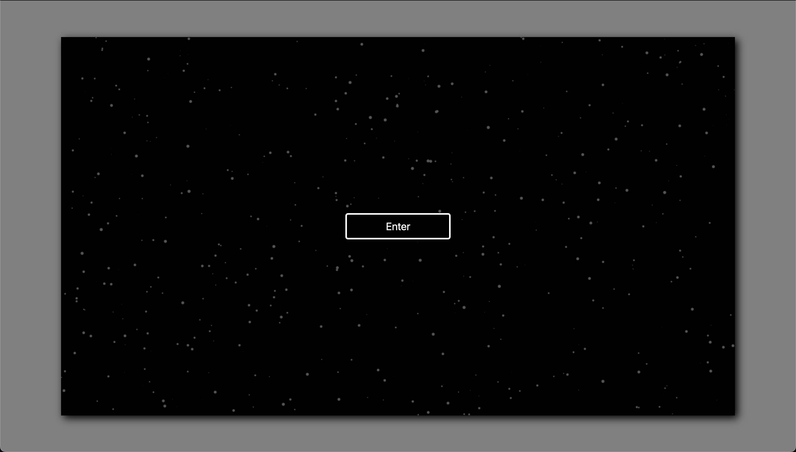
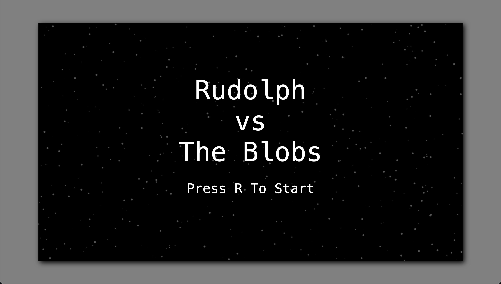
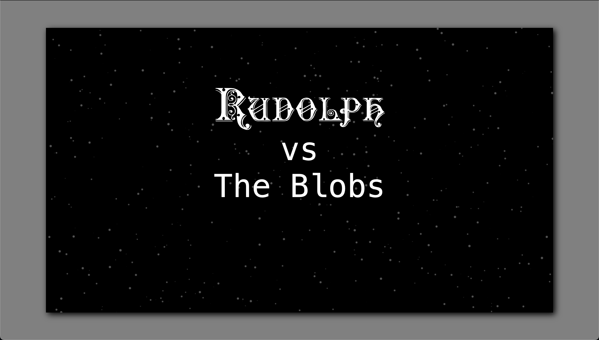
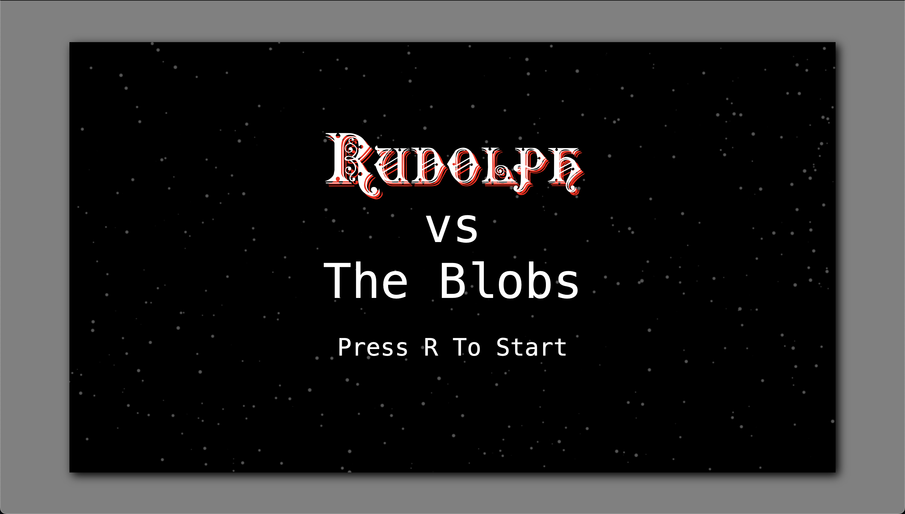
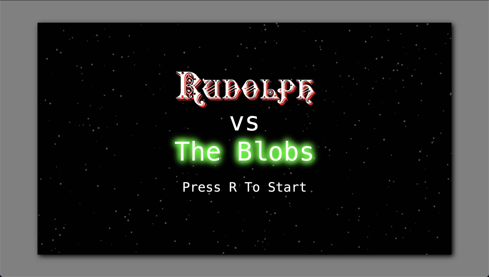
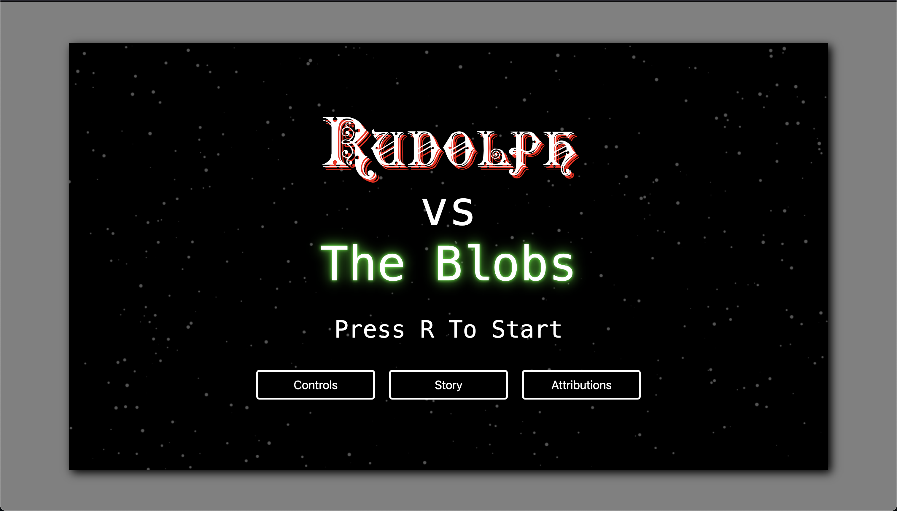

Title Enhancement
We could call our game complete right here and go home, but our title screen, while functional, is a little sad. Also, due to the nature of auto-playing sound on the web, we can't guarantee that our players are going to hear our auto-played intro music unless we create a point of interaction at the start of the game. Let's shine this thing up a little bit.
We'll start by creating an entry point for the user to click on to reach the title screen. In modern browsers, auto-playing sound is blocked by default. However, user interactions such as clicking a button can get us around this restriction.
<!-- index.html -->
<!-- ... -->
<body>
<div id="game-container">
<div id="title-screen" class="screen">
<div>Rudolph VS The Blobs</div>
<div>Press R To Start</div>
<div id="enter-screen" class="screen">
<button id="enter-btn" class="menu-btn">Enter</button>
</div>
<div id="title-screen" class="screen">
<!-- ... -->
Some styling:
/* style.css */
#enter-screen {
display: flex;
}
.screen {
display: none;
width: 100%;
height: 100%;
background: transparent;
color: white;
flex-direction: column;
align-items: center;
justify-content: center;
font: 40px monospace;
z-index: 1;
position: relative;
cursor: default;
&:hover {
cursor: default;
}
}
.menu-btn {
color: white;
background-color: black;
font-size: 20px;
border: 3px solid white;
border-radius: 5px;
width: 200px;
height: 50px;
&:hover {
color: black;
background-color: white;
}
}

Nothing out of the ordinary here, all just standard CSS. You may be wondering about cursor: default. We're going to be creating several text-filled screens in a little while, and this is going to keep our cursor from changing when we hover over that text. This is also why we have a .screen class selector. Speaking of which, we've added that class to our title screen, and we can remove the #title-screen styles, because it's just repetition.
Now we can show our title screen and play our intro music when we click the "Enter" button.
// main.ts
const introSong: HTMLAudioElement = new Audio("intro-song.mp3");
introSong.loop = true;
introSong.volume = 0.5;
const enterScreen = document.getElementById("enter-screen") as HTMLElement;
const enterBtn = document.getElementById("enter-btn") as HTMLElement;
enterBtn.addEventListener("click", () => {
introSong.play();
enterScreen.style.display = 'none';
showScreen("title-screen");
});
function showScreen(id: string) {
const screens = document.querySelectorAll(
"div.screen"
) as NodeListOf;
screens.forEach((screen) => (screen.style.display = "none"));
(document.getElementById(id) as HTMLDivElement).style.display = "flex";
}
Isn't this showScreen function kind of overkill showing the title screen? It would be, but again, we've got a bunch more screens coming up, and this is going to simplify showing/hiding them.
Let's add some interest to the title screen. First, the title should be bigger and the "Press R To Start" should be smaller.
<div id="title-screen" class="screen">
<div class="title-text title-section">
<div>Rudolph</div>
<div>vs</div>
<div>The Blobs</div>
</div>
<div class="title-section">Press R To Start</div>
</div>
Some styling:
.title-text {
font: 80px monospace;
text-align: center;
}
.title-section {
margin-bottom: 40px;
}

Looking better already. I'd like to see the "Press R To Start" flash like an arcade game. We'll add a class flash to its div. In case we want to update our game over screen in the future, we'll use a class instead of an id, and we'll write our flashing code as if there are multiple .flash elements in our project. Premature optimization is the enemy, but... YOLO, I guess.
// main.ts
const flashElements = document.querySelectorAll(
".flash"
) as NodeListOf;
setInterval(
() =>
flashElements.forEach(
(elem) =>
(elem.style.visibility =
elem.style.visibility === "hidden" ? "visible" : "hidden")
),
500
);
Every 500 milliseconds we'll toggle our .flash elements from "hidden" to "visible".
Better still, but a little plain yet. We'll add some style to the "Rudolph" and "The Blobs" parts of this. A holiday font for "Rudolph" and an ominous glow for "The Blobs". Let's start with the font. I've downloaded one here. Once downloaded, we'll store the .ttf file in the public directory with our sounds. We can then load the font:
@font-face {
font-family: sentinel;
src: url("/Sentinel.ttf");
}
And use the font:
<div class="title-text title-section">
<div id="rudolph">Rudolph</div>
<div>vs</div>
<div id="the-blobs">The Blobs</div>
</div>
#rudolph {
font: 80px sentinel;
}

And let's add some color.
#rudolph {
font: 80px sentinel;
text-shadow: 5px 5px red;
}

Très festive. You may notice a brief flicker of unstyled text when the title screen first loads. This can be mitigated by pre-loading the font in the <head> tag of index.html.
<head>
<meta charset="UTF-8" />
<meta name="viewport" content="width=device-width, initial-scale=1.0" />
<link
rel="preload"
href="/Sentinel.ttf"
as="font"
type="font/ttf"
crossorigin="anonymous"
/>
<title>Rudolph vs The Blobs</title>
</head>
Now let's make "The Blobs" glow. We can get a nice glow effect by layering shadows.
#the-blobs {
text-shadow: 0 0 20px lime, 0 0 20px lime, 0 0 20px lime, 0 0 20px lime,
0 0 20px lime;
}

Looks really good, but it'd be more space-blobby if it was pulsing. We'll move these shadows into a keyframes animation, then add this animation to our #the-blobs styles.
@keyframes glowing {
0%,
100% {
text-shadow: 0 0 20px lime;
}
50% {
text-shadow: 0 0 20px lime,
0 0 20px lime,
0 0 20px lime,
0 0 20px lime,
0 0 20px lime;
}
}
#the-blobs {
animation: glowing 2.5s linear infinite;
}
I'm pretty happy with this. The last thing we'll need to do is add those screens we were talking about earlier. We'll need to have one screen to explain the game controls, (no fun having to guess what the buttons do), another for the game's story, and a final screen for attributions, (required by the licensing for the music and sound effects I've used). We'll just sketch this out, and we'll leave the copy to you. (Or you can find mine on GitHub).
<div id="title-screen" class="screen">
<div class="title-text title-section">
<div id="rudolph">Rudolph</div>
<div>vs</div>
<div id="the-blobs">The Blobs</div>
</div>
<div class="flash title-section">Press R To Start</div>
<div>
<button id="controls-btn" class="menu-btn">Controls</button>
<button id="story-btn" class="menu-btn">Story</button>
<button id="attributions-btn" class="menu-btn">Attributions</button>
</div>
</div>
This sets up the buttons we'll click to view our new screens.
Now the screens themselves.
<div id="title-screen" class="screen">
<!-- ... -->
</div>
<div id="controls-screen" class="screen">
<div class="back-btn"><-</div>
<p>
This is the controls screen.
</p>
</div>
<div id="story-screen" class="screen">
<div class="back-btn"><-</div>
<p>
This is the story screen.
</p>
</div>
<div id="attributions-screen" class="screen">
<div class="back-btn"><-</div>
<p>
This is the attributions screen.
</p>
</div>
Our one small piece of new styling:
.back-btn {
background-color: transparent;
font-size: 50px;
color: white;
font-weight: bold;
border: none;
position: absolute;
top: 20px;
left: 40px;
&:hover {
cursor: pointer;
}
}
And now we handle all the button clicks.
const controlsButton = document.getElementById("controls-btn") as HTMLElement;
const storyButton = document.getElementById("story-btn") as HTMLElement;
const attributionsButton = document.getElementById(
"attributions-btn"
) as HTMLElement;
controlsButton.addEventListener("click", () => showScreen("controls-screen"));
storyButton.addEventListener("click", () => showScreen("story-screen"));
attributionsButton.addEventListener("click", () =>
showScreen("attributions-screen")
);
document
.querySelectorAll(".back-btn")
.forEach((btn) =>
btn.addEventListener("click", () => showScreen("title-screen"))
);
The very last thing I'd like to address is a bug in our scrolling stars code. If we're on any of the screens with scrolling stars and we leave the browser tab the game is in, (the longer we're away from the page, the more pronounced this is), we'll see that the stars get bunched up in a line.
This is not at all what we intended. Here's why this is happening. Each frame, we get the delta time from the previous frame, and we calculate the movement distance of the stars based on this time difference. This is how we normalize users' different framerates. While this is generally a good strategy, there's a quirk of requestAnimationFrame that is biting us. If we leave the browser tab where the animation is taking place, the animation loop stops. When we return to our tab, the loop starts again. This means our next delta time calculation is going to be really large, since the previous frame happened who-knows-how-long ago. That means our stars are going to jump a large distance, since their distance is scaled by the delta time. A big wad of stars is all going to reach the edge of the screen at the same time when this happens, and they're all going to loop to the opposite edge together, bunching up in the lines we see here. For a quick fix, we'll just set a cap on how big that delta time can be. If it's larger than that, we'll ignore the delta time and just use our cap value. We don't care whether the stars end up in precisely the position they would have been in had the user not clicked away, so this is a perfectly fine option for us.
// main.ts
// ...
function animate(ms: number): void {
if (gameStarted) return;
requestAnimationFrame(animate);
const dt = Math.min(35, ms - lastTime);
// ...
}
35 milliseconds is a little more than we would get at 30 frames per second, which is the lowest we can reasonably expect to see. Bug fixed!
That should just about do it. We have an entry point that allows us to auto-play our intro music, a polished title screen with some special fonts and effects, and some menu buttons and screens. Our game is complete! You can play what we've built at https://lets-play-a-game.netlify.app/.